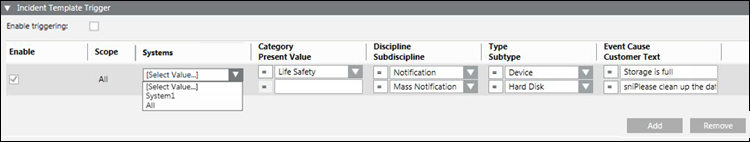

Notification in Distributed Systems
Notification system has taken care of distribution in the following features:
Incident Template Triggers
Notification supports the initiation of incidents based on incoming events through incident template trigger rules. In a distributed environment, the incoming events from multiple projects can be seen in Summary bar or Event list, and accordingly trigger rules can be created to cover events from these multiple projects linked in the distributed environment.

The filter criteria Systems enumerates all (connected) system names configured in SMC in addition to the wild card entry All. When a new rule is created, by default [Select Value…] displays for the Systems criteria prompting the user to select the appropriate system value from the drop-down list.
Synchronization on Project Disconnection and Reconnection
The lifecycle of incidents triggered by events is coupled to the lifecycle of the triggering event. This means that when the triggering event is closed after reset, Notification clears all the associated incidents using All clear and then closes all associated incidents.
If an incident is triggered by a system other than the one owning the incident, there is a reliability problem.
For example, system 1 raises an event, system 2 has an incident template triggering rule that matches the event from system 1 and raises an incident. At the time when the triggering event is closed on system 1, and around the same time the connection between system 1 and system 2 is interrupted. This means that Notification on system 2 is not notified about the event closure and will never close the incident automatically.
To guarantee correct behavior of Notification on system 2, the notification system executes an event synchronization logic when a disconnection and reconnection with other systems in a distributed system is detected.